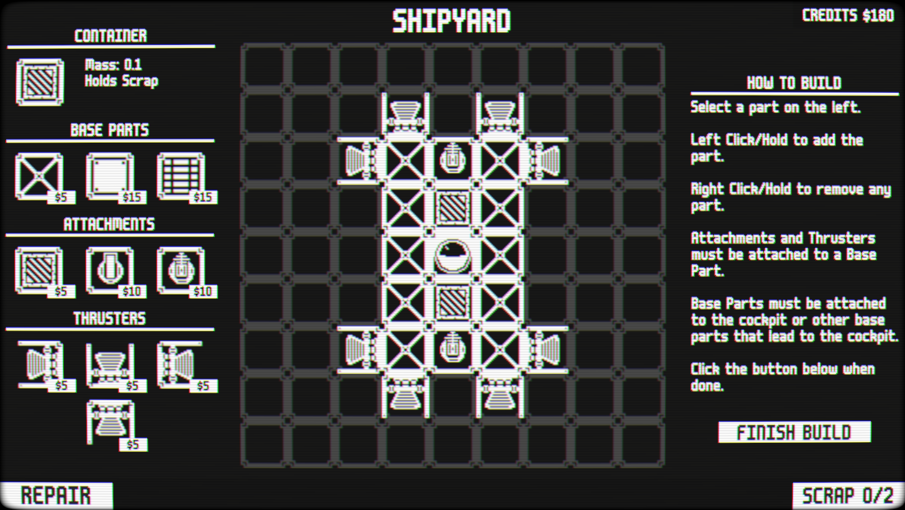
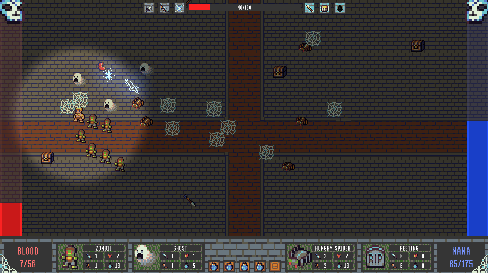
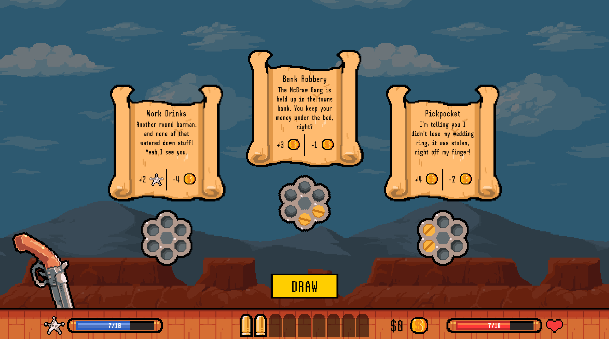
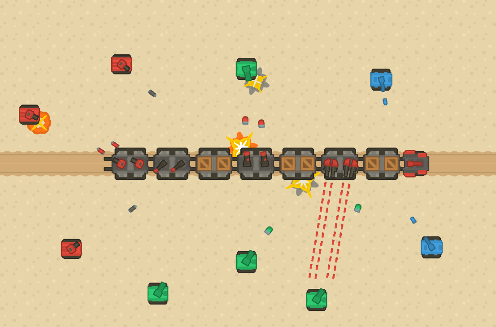
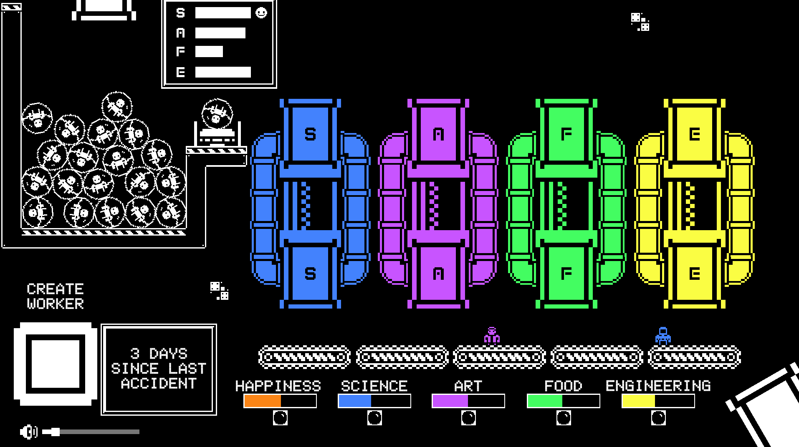

Hi I’m Matt, a solo game developer here in Australia! Check out some of my work below and if you have any questions feel free to contact me at info[at]vidmancer.com.
Stellar Routes is my next commercial release, inspired by Mini Metro, this game has players drawing routes between and around planets to transport aliens to their home world. It will be available on Steam sometime in 2026.
File Under Kingdom was my first commercial release, it's a city builder/puzzle game with a branching story tied to how the player builds their kingdom. Available on Steam.
Since 2020 I’ve entered the annual Game Makers Toolkit Game Jam! These game jams are competitions held over 2 to 4 days, where developers are tasked to create a video game in accordance to a theme that is revealed on the first day of competition.
Ranked Top 12% - Game Link

Ranked Top 17% - Game Link

Ranked Top 6% - Game Link

Ranked Top 16% - Game Link

Ranked Top 29% - Game Link

